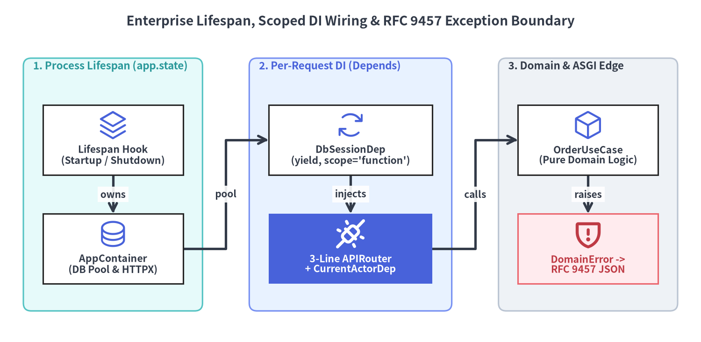
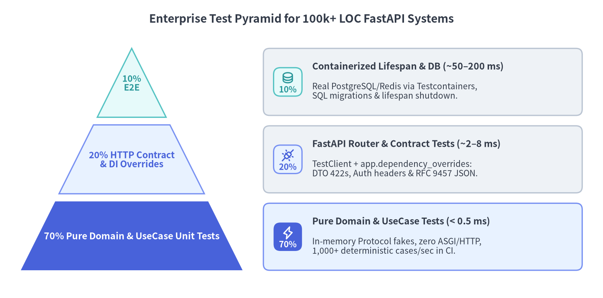

大規模 DI エイリアス・Lifespan 管理・テストピラミッド戦略
500以上のエンドポイントと10万行超（100,000+ LOC）のコードベースにおいて、サブ秒単位のテストフィードバックと確実なリソース解放を維持するには、プロセス寿命のインフラ管理（lifespan）、リクエスト寿命の Unit-of-Work 注入（Annotated[..., Depends]）、純粋ドメイン例外の境界変換（@app.exception_handler）、そして 密閉型（Hermetic）契約テスト（app.dependency_overrides）を明確に分離する必要があります。

Source Code
from drawlib.canvas import save, setup
from drawlib.diagrams.architecture import ArchitectureDiagram, Node, NodeGroup, PhosphorIcon
from drawlib.styles import Styles
from drawlib.text import text
setup(width=180, height=88, dpi=150)
text(
(90, 82.5),
"Enterprise Lifespan, Scoped DI Wiring & RFC 9457 Exception Boundary",
style=Styles.DarkBold.patch(text_size=13.5),
)
diag = ArchitectureDiagram(
node_style=Styles.Primary,
node_text_style=Styles.DarkBold.patch(text_size=10.2),
edge_style=Styles.DarkBold,
edge_text_style=Styles.DarkBold.patch(text_size=10.0),
node_card_style=Styles.Neutral,
)
# Zone 1: Process Lifespan (Once per Worker)
life_grp = diag.add(
NodeGroup(
title="1. Process Lifespan (app.state)",
width=46,
height=65,
style=Styles.SecondaryNeutral.patch(shape_r=2.0),
text_style=Styles.SecondaryBold.patch(halign="left", text_size=10.8),
),
(6, 8),
)
life_node = life_grp.add(
Node(
"Lifespan Hook\n(Startup / Shutdown)",
width=36,
height=18,
icon=PhosphorIcon.STACK,
card_style=Styles.White,
),
(23, 44),
)
pool_node = life_grp.add(
Node(
"AppContainer\n(DB Pool & HTTPX)",
width=36,
height=18,
icon=PhosphorIcon.DATABASE,
card_style=Styles.White,
),
(23, 16),
)
# Zone 2: Per-Request DI Graph (Annotated Aliases)
di_grp = diag.add(
NodeGroup(
title="2. Per-Request DI (Depends)",
width=52,
height=65,
style=Styles.PrimaryNeutral.patch(shape_r=2.0),
text_style=Styles.PrimaryBold.patch(halign="left", text_size=10.8),
),
(64, 8),
)
uow_node = di_grp.add(
Node(
"DbSessionDep\n(yield, scope='function')",
width=42,
height=18,
icon=PhosphorIcon.ARROWS_CLOCKWISE,
card_style=Styles.White,
),
(26, 44),
)
route_node = di_grp.add(
Node(
"3-Line APIRouter\n+ CurrentActorDep",
width=42,
height=18,
icon=PhosphorIcon.PLUGS_CONNECTED,
card_style=Styles.PrimaryFlat,
text_style=Styles.WhiteBold.patch(text_size=10.2),
style=Styles.WhiteBold,
),
(26, 16),
)
# Zone 3: Pure Domain & RFC 9457 Edge
dom_grp = diag.add(
NodeGroup(
title="3. Domain & ASGI Edge",
width=46,
height=65,
style=Styles.Neutral.patch(shape_r=2.0),
text_style=Styles.DarkBold.patch(halign="left", text_size=10.8),
),
(128, 8),
)
uc_node = dom_grp.add(
Node(
"OrderUseCase\n(Pure Domain Logic)",
width=36,
height=18,
icon=PhosphorIcon.CUBE,
card_style=Styles.White,
),
(23, 44),
)
err_node = dom_grp.add(
Node(
"DomainError ->\nRFC 9457 JSON",
width=36,
height=18,
icon=PhosphorIcon.SHIELD_WARNING,
card_style=Styles.DangerNeutral,
text_style=Styles.DangerBold.patch(text_size=10.2),
style=Styles.DangerBold,
),
(23, 16),
)
# Connections across lifecycle tiers
diag.connect(life_node, pool_node, label="owns")
diag.connect(pool_node, uow_node, label="pool", routing="orthogonal")
diag.connect(uow_node, route_node, label="injects")
diag.connect(route_node, uc_node, label="calls", routing="orthogonal")
diag.connect(uc_node, err_node, label="raises")
diag.draw()
save()
1. 決定論的なプロセス Lifespan 管理と import 時グローバル変数の排除
大規模 Python バックエンドにおける最も高コストなアンチパターンの1つが、ファイルが import された瞬間に DB エンジンや Redis クライアント、httpx.AsyncClient プールを モジュールレベルのグローバル変数 として初期化してしまう実装（engine = create_async_engine(os.environ["DB_URL"])）です。
ソフトウェア工学の原則：import 時の副作用（I/O）ゼロ
10万行超のシステムでは、モジュール import 時の副作用が連鎖的な運用障害を引き起こします。
- テスト収集や CLI ツールの破綻: スキーマや補助関数を1つ import しただけで実環境への TCP 接続が試行されたり、
pytest --collect-onlyや OpenAPI スキーマ出力スクリプト実行時に環境変数未設定で即座にクラッシュしたりします。 - マルチワーカー
fork()時のソケット破損: Gunicorn + Uvicorn ワーカーなどのプロセスマネージャがfork()前にアプリを import すると、親プロセス側で生成されたソケットやイベントループロックが子ワーカー間で競合・破損します。 - ローリングアップデート時のコネクションリーク: 明示的なシャットダウン処理が存在しないと、Kubernetes の Pod 停止（
SIGTERM）時にコネクションプールやテレメトリエクスポータが途中切断されます。
FastAPI での実践：@asynccontextmanager lifespan と型付き AppContainer
FastAPI v0.162.2 では、プロセスの起動・終了処理を標準ライブラリの @asynccontextmanager で記述し、FastAPI(lifespan=lifespan) に渡します。長寿命の共有プール群を型安全な AppContainer データクラスにまとめて app.state.container へ格納し、yield を try ... finally で囲むことで、異常終了時にも確実にクローズ処理を実行させます。
# src/shared/lifespan.py — import 時 I/O を一切発生させない決定論的起動・終了管理
from collections.abc import AsyncIterator
from contextlib import asynccontextmanager
from dataclasses import dataclass, field
from fastapi import FastAPI
@dataclass
class ConnectionPool:
dsn: str
is_open: bool = False
events: list[str] = field(default_factory=list)
async def startup(self) -> None:
self.is_open = True
self.events.append("pool_opened")
async def close(self) -> None:
self.is_open = False
self.events.append("pool_closed")
@dataclass
class AppContainer:
"""プロセス寿命で共有されるインフラ資源を保持する型安全なコンテナ。"""
db_pool: ConnectionPool
order_repo: InMemoryOrderRepository
stock_by_sku: dict[str, int]
def create_enterprise_app(pool: ConnectionPool | None = None) -> FastAPI:
managed_pool = pool or ConnectionPool(
dsn="postgresql+asyncpg://127.0.0.1:5432/orders"
)
@asynccontextmanager
async def lifespan(app: FastAPI) -> AsyncIterator[None]:
await managed_pool.startup()
app.state.container = AppContainer(
db_pool=managed_pool,
order_repo=InMemoryOrderRepository(),
stock_by_sku={"SKU-PRO-10": 5},
)
try:
yield
finally:
await managed_pool.close()
return FastAPI(title="Enterprise Commerce Platform", lifespan=lifespan)
2. 再利用可能な Annotated DI 型エイリアスとスコープ付き Unit-of-Work
API が 500以上のエンドポイント に拡大した際、すべてのルート関数に db: AsyncSession = Depends(get_db_session) や actor: User = Depends(get_current_actor) を毎回書き連ねると、深刻なボイラープレートとリファクタリング負荷が発生します。
ソフトウェア工学の原則：コンストラクタ注入と明示的 Unit-of-Work
エンタープライズ設計では、オブジェクトグラフの組み立て（配線） と HTTP コントローラのシグネチャ を明確に分離します。
- 極薄のトランスポートコントローラ: ルート関数の責務は「HTTP 入力の検証・単一
UseCaseへの委譲・結果の返却」のみに限定し、3〜5行以内 に保ちます。 - 原子的な Unit-of-Work（UoW）トランザクション: 更新系リクエストではトランザクションセッションを開始し、ユースケース成功時にコミット、例外発生時に即座にロールバックしたうえで、クライアントへ
200/201応答を返す前に確定させます。
FastAPI での実践：Annotated 型エイリアスと Depends(..., scope="function")
presentation/dependencies.py に再利用可能な Annotated 型エイリアス（ContainerDep・DbSessionDep・CurrentActorDep・OrderUseCaseDep）を集約します。特に重要な機能として、FastAPI v0.162.2 のジェネレータ（yield）依存は Depends(get_uow_session, scope="function") をサポートしており、yield 後の commit() / rollback() / close() を ルート関数完了直後かつ HTTP レスポンス送信前 に実行できます（scope の内部動作は Dependant DAG・キャッシュ・yield スコープ で詳説します）。
# src/orders/presentation/dependencies.py — 合成可能な Annotated DI 型エイリアス群
from collections.abc import AsyncIterator
from dataclasses import dataclass
from typing import Annotated
from fastapi import APIRouter, Depends, Header, HTTPException, Request, status
@dataclass
class UnitOfWorkSession:
pool: ConnectionPool
async def commit(self) -> None:
self.pool.events.append("uow_committed")
async def rollback(self) -> None:
self.pool.events.append("uow_rolled_back")
async def close(self) -> None:
self.pool.events.append("uow_closed")
@dataclass(frozen=True, slots=True)
class AuthenticatedActor:
actor_id: str
tenant_id: str
def get_container(request: Request) -> AppContainer:
container: AppContainer = request.app.state.container
return container
ContainerDep = Annotated[AppContainer, Depends(get_container)]
async def get_uow_session(container: ContainerDep) -> AsyncIterator[UnitOfWorkSession]:
session = UnitOfWorkSession(pool=container.db_pool)
try:
yield session
await session.commit()
except Exception:
await session.rollback()
raise
finally:
await session.close()
# scope="function" により、HTTP レスポンス送信「前」に commit / rollback を確定！
DbSessionDep = Annotated[UnitOfWorkSession, Depends(get_uow_session, scope="function")]
async def get_current_actor(
x_actor_id: Annotated[str, Header(min_length=3)],
x_tenant_id: Annotated[str, Header(min_length=3)],
) -> AuthenticatedActor:
if not x_actor_id.startswith("usr_"):
raise HTTPException(
status_code=status.HTTP_401_UNAUTHORIZED,
detail="Invalid actor token.",
)
return AuthenticatedActor(actor_id=x_actor_id, tenant_id=x_tenant_id)
CurrentActorDep = Annotated[AuthenticatedActor, Depends(get_current_actor)]
def get_order_repo(container: ContainerDep) -> OrderRepositoryPort:
return container.order_repo
OrderRepoDep = Annotated[OrderRepositoryPort, Depends(get_order_repo)]
def get_order_use_case(
container: ContainerDep,
repo: OrderRepoDep,
uow: DbSessionDep,
) -> EnterpriseOrderUseCase:
return EnterpriseOrderUseCase(
repo=repo, uow=uow, stock_by_sku=container.stock_by_sku
)
OrderUseCaseDep = Annotated[EnterpriseOrderUseCase, Depends(get_order_use_case)]
# 500以上のエンドポイントでもルート定義はわずか3行の薄さを維持:
router = APIRouter(prefix="/v1/orders", tags=["orders"])
@router.post("", response_model=OrderReadDTO, status_code=status.HTTP_201_CREATED)
async def create_order(
payload: OrderCreateDTO,
actor: CurrentActorDep,
use_case: OrderUseCaseDep,
) -> OrderEntity:
return await use_case.place_order(actor, payload)
3. 純粋ドメイン例外から RFC 9457 Problem Details への境界変換
境界づけられたコンテキストと階層化で確認したとおり、ドメインモデルやユースケースは fastapi.HTTPException ではなく、純粋な Python 例外（OrderNotFoundError・InsufficientInventoryError・TenantAccessDeniedError）を送出します。
FastAPI での実践：@app.exception_handler(DomainError) による一元変換
ASGI 合成ルートに単一の @app.exception_handler(DomainError) を登録し、ドメイン例外を国際標準の RFC 9457 Problem Details（application/problem+json） 形式へ一括変換します。内部の SQL クエリやスタックトレースを外部クライアントへ漏洩させることなく、一貫した機械可読エラー契約を提供できます（トレース ID 相関との連携は ネイティブ OpenTelemetry と例外処理 を参照してください）。
# src/shared/problem_details.py — DomainError を RFC 9457 へ写像する単一の ASGI 境界
from fastapi import FastAPI, Request, status
from fastapi.responses import JSONResponse
def register_domain_exception_handlers(app: FastAPI) -> None:
@app.exception_handler(DomainError)
async def handle_domain_error(request: Request, exc: DomainError) -> JSONResponse:
if isinstance(exc, OrderNotFoundError):
http_status = status.HTTP_404_NOT_FOUND
error_type = "https://api.example.com/problems/order-not-found"
title = "Order Not Found"
elif isinstance(exc, InsufficientInventoryError):
http_status = status.HTTP_409_CONFLICT
error_type = "https://api.example.com/problems/insufficient-inventory"
title = "Insufficient Inventory"
elif isinstance(exc, TenantAccessDeniedError):
http_status = status.HTTP_403_FORBIDDEN
error_type = "https://api.example.com/problems/tenant-access-denied"
title = "Tenant Access Denied"
else:
http_status = status.HTTP_400_BAD_REQUEST
error_type = "https://api.example.com/problems/domain-rule-violation"
title = "Domain Rule Violation"
return JSONResponse(
status_code=http_status,
media_type="application/problem+json",
content={
"type": error_type,
"title": title,
"status": http_status,
"detail": str(exc),
"instance": request.url.path,
},
)
4. 10万行規模のテストピラミッドと密閉型 dependency_overrides
すべての業務分岐テストで毎回実 PostgreSQL コンテナを起動して TestClient 経由の HTTP リクエストを流していると、テスト数が 5,000 件を超えた時点で CI 実行時間が45分を超える壁 に直面します。逆に unittest.mock.patch("src.orders.crud.db.execute") のような文字列パス指定のモンキーパッチに頼ると、内部モジュールを整理するたびにテストが壊れる脆弱なスイートになります。

Source Code
from drawlib.canvas import save, setup
from drawlib.icons import phosphor
from drawlib.smartarts import CardList, Pyramid
from drawlib.styles import Styles
from drawlib.text import text
setup(width=174, height=86, dpi=150)
text(
(87, 80.5),
"Enterprise Test Pyramid for 100k+ LOC FastAPI Systems",
style=Styles.DarkBold.patch(text_size=13.5),
)
# Left: 3-Tier Testing Pyramid (Base at bottom, vertex_to_base: Top=10%, Mid=20%, Base=70%)
pyramid = Pyramid(
style=Styles.Neutral,
text_style=Styles.DarkBold.patch(text_size=11.0),
)
pyramid.add(
"10%\nE2E",
style=Styles.SecondaryNeutral,
text_style=Styles.SecondaryBold.patch(text_size=10.5),
)
pyramid.add(
"20% HTTP Contract\n& DI Overrides",
style=Styles.PrimaryNeutral,
text_style=Styles.PrimaryBold.patch(text_size=10.8),
)
pyramid.add(
"70% Pure Domain & UseCase Unit Tests",
style=Styles.PrimaryFlat,
text_style=Styles.WhiteBold.patch(text_size=11.0),
)
pyramid.draw(
xy=(6, 8),
width=64,
height=64,
margin=2.2,
direction="bottom",
order="vertex_to_base",
)
# Right: Aligned Tier Specifications via CardList
cards = CardList(
style=Styles.Neutral.patch(shape_r=1.8),
text_style=Styles.DarkBold.patch(text_size=11.0),
description_style=Styles.Dark.patch(text_size=10.0),
badge_shape="rounded_rect",
badge_style=Styles.SecondaryNeutral,
badge_text_style=Styles.SecondaryBold.patch(text_size=10.0),
icon_style=Styles.SecondaryBold,
direction="vertical",
spacing=3.0,
)
cards.add(
"Containerized Lifespan & DB (~50–200 ms)",
"Real PostgreSQL/Redis via Testcontainers,\nSQL migrations & lifespan shutdown.",
badge_text="10%",
icon=phosphor.database,
)
cards.add(
"FastAPI Router & Contract Tests (~2–8 ms)",
"TestClient + app.dependency_overrides:\nDTO 422s, Auth headers & RFC 9457 JSON.",
badge_text="20%",
icon=phosphor.plugs_connected,
badge_style=Styles.PrimaryNeutral,
badge_text_style=Styles.PrimaryBold.patch(text_size=10.0),
icon_style=Styles.PrimaryBold,
)
cards.add(
"Pure Domain & UseCase Tests (< 0.5 ms)",
"In-memory Protocol fakes, zero ASGI/HTTP,\n1,000+ deterministic cases/sec in CI.",
badge_text="70%",
icon=phosphor.lightning,
style=Styles.PrimaryNeutral.patch(shape_r=1.8),
badge_style=Styles.PrimaryFlat,
badge_text_style=Styles.WhiteBold.patch(text_size=10.0),
icon_style=Styles.WhiteBold,
)
cards.draw(xy=(76, 8), width=92, height=64)
save()
FastAPI での実践：サブミリ秒単体テストと app.dependency_overrides
Domain 層と UseCase 層が Protocol ポートのみに依存しているため、全体の70%を占める単体テストは ASGI や HTTP を一切経由せずメモリ上で完結します。続く 20%の HTTP 契約テスト層 では、FastAPI の app.dependency_overrides を用いて関数オブジェクト参照で安全に依存を差し替え、try ... finally: app.dependency_overrides.clear() で確実にクリーンアップします（非同期 httpx.AsyncClient や負荷試験パターンは 実践テスト手法と本番 ASGI 運用 を参照してください）。
# tests/orders/test_order_contracts.py — 純粋単体テスト層 + 密閉型 DI オーバーライド層
import pytest
from fastapi.testclient import TestClient
# 1. 70% 層: 純粋な UseCase 単体テスト (< 0.5 ms・ASGI / HTTP オーバーヘッドゼロ)
@pytest.mark.anyio
async def test_place_order_rejects_insufficient_inventory() -> None:
repo = InMemoryOrderRepository()
uow = UnitOfWorkSession(pool=ConnectionPool(dsn="memory://unit"))
use_case = EnterpriseOrderUseCase(
repo=repo, uow=uow, stock_by_sku={"SKU-PRO-10": 3}
)
actor = AuthenticatedActor(actor_id="usr_alice", tenant_id="tnt_acme")
with pytest.raises(InsufficientInventoryError):
await use_case.place_order(
actor,
OrderCreateDTO(
customer_id="cust_100",
lines=[
OrderLineInputDTO(
sku="SKU-PRO-10", quantity=9, unit_price_cents=1500
)
],
),
)
# 2. 20% 層: dependency_overrides を確実に復元する密閉型 FastAPI 契約テスト
def test_http_contract_and_dependency_override_isolation() -> None:
pool = ConnectionPool(dsn="postgresql+asyncpg://127.0.0.1:5432/orders")
app = create_enterprise_app(pool=pool)
headers = {"X-Actor-Id": "usr_alice", "X-Tenant-Id": "tnt_acme"}
with TestClient(app) as client:
# ドメイン例外 InsufficientInventoryError -> 409 RFC 9457 Problem Details 変換を検証
conflict = client.post(
"/v1/orders",
headers=headers,
json={
"customer_id": "cust_42",
"lines": [
{"sku": "SKU-PRO-10", "quantity": 99, "unit_price_cents": 4000}
],
},
)
assert conflict.status_code == 409
assert conflict.headers["content-type"].startswith("application/problem+json")
assert conflict.json()["title"] == "Insufficient Inventory"
# 文字列 import パッチを使わず、関数参照キーで OrderRepositoryPort を密閉差し替え
isolated_repo = InMemoryOrderRepository()
app.dependency_overrides[get_order_repo] = lambda: isolated_repo
try:
missing = client.get("/v1/orders/ord_9001", headers=headers)
assert missing.status_code == 404
assert missing.json()["title"] == "Order Not Found"
finally:
app.dependency_overrides.clear()
# TestClient コンテキスト終了時に lifespan の finally -> pool.close() が自動実行される
assert pool.is_open is False
続いて第3章の Path・Query・Header・Cookie・Body へ進み、FastAPI が Annotated パラメータメタデータをどのように解析し、高速な Pydantic v2 バリデータへとコンパイルしているのかを詳しく見ていきましょう。